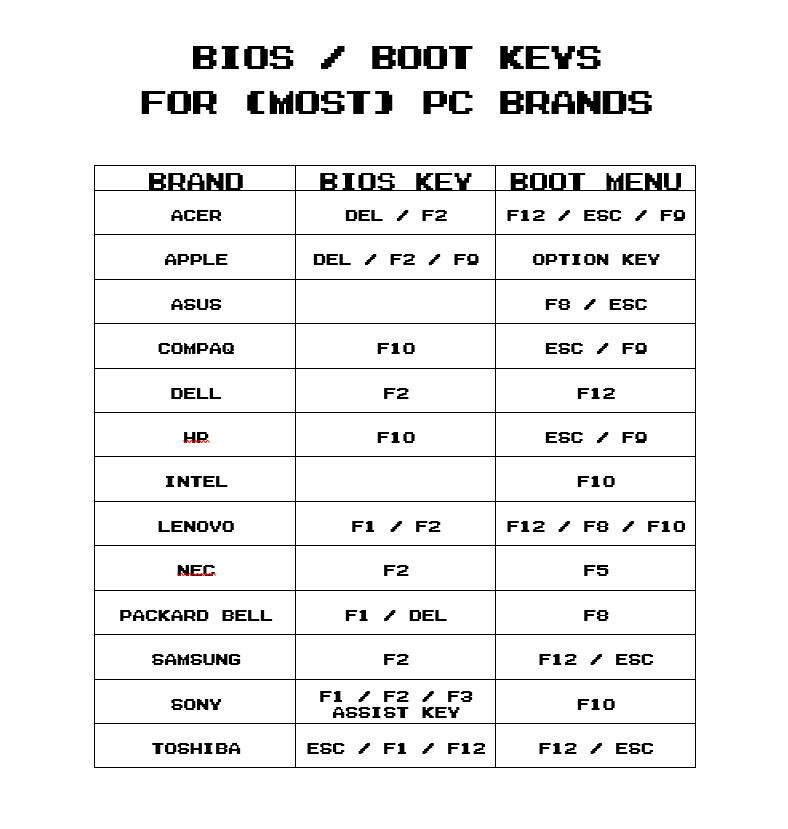
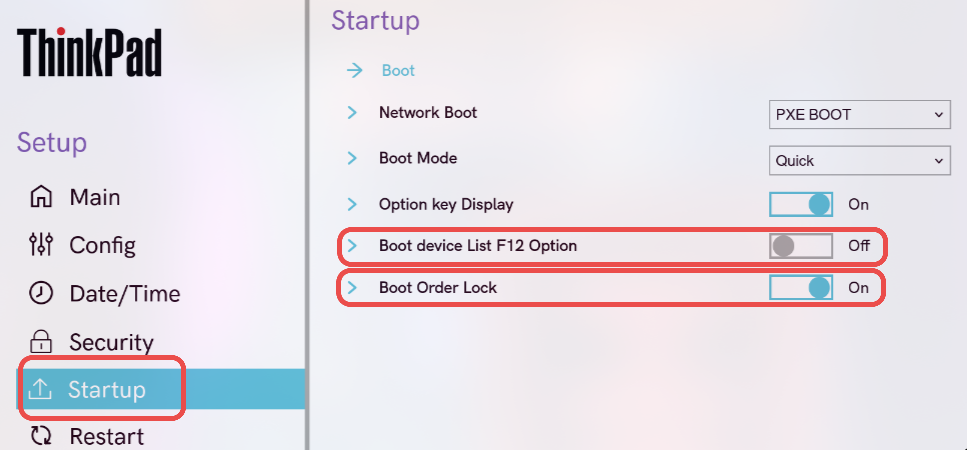

Objetivo: Evitar el acceso no autorizado al equipo antes de que arranque el sistema operativo.
Pasos
- Reinicia el ordenador y accede al menú BIOS/UEFI (usualmente presionando Supr, F2, Esc o F10 según el fabricante).
- Dirígete al apartado Security o Seguridad.

- Busca la opción User Password, Power-On Password o similar.

- Introduce una contraseña segura que combine letras, números y símbolos.
- Guarda los cambios y reinicia el sistema.
Resultado: El sistema pedirá una contraseña antes de iniciar el arranque.
Objetivo: Restringir el acceso y las modificaciones a la configuración de la BIOS/UEFI.
Pasos
- Ingresa nuevamente al menú BIOS/UEFI.
- En la sección Security, selecciona Administrator Password o Supervisor Password.

- Guarda los cambios y reinicia el equipo.
Resultado: Solo quien conozca la contraseña de administrador podrá modificar la configuración del BIOS/UEFI.
Objetivo: Evitar que el sistema se inicie desde dispositivos externos (USB, DVD, etc.) que puedan contener software malicioso.
Pasos
- Accede al BIOS/UEFI.
- Busca la sección Boot, Boot Options o Advanced Boot Options.
- Desactiva Boot Device List F12 Option y Boot Order Lock.
- Guarda los cambios.
Resultado: El equipo no podrá arrancar desde medios externos sin autorización.
Objetivo: Asegurar que el sistema operativo principal sea el primero en arrancar y evitar manipulaciones.
Pasos
- Entra al BIOS/UEFI y localiza la pestaña Boot.
- Establece como primera opción de arranque el disco donde está instalado el sistema operativo.

- Mueve cualquier otro dispositivo (USB, CD/DVD, red, etc.) fuera de la lista.
- Guarda los cambios.
Resultado: El sistema solo iniciará desde el disco autorizado.
Objetivo: Aplicar configuraciones adicionales que fortalezcan la seguridad general del BIOS/UEFI.
Recomendaciones
- Activar Secure Boot: Garantiza que solo se carguen sistemas operativos y controladores firmados digitalmente.


- Desactivar puertos innecesarios: Esto minimiza posibles vectores de ataque.


- Habilitar TPM (Trusted Platform Module): Permite cifrado de disco (BitLocker, LUKS), autenticación avanzada como Windows Hello y arranque seguro.


Resultado: La BIOS/UEFI estará reforzada contra accesos no autorizados y manipulación del arranque.